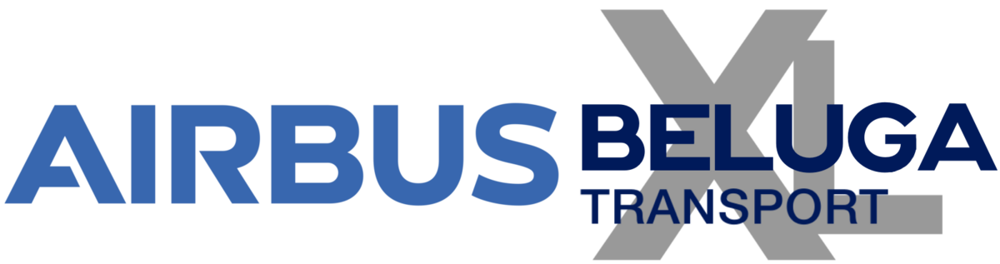

Airbus BelugaXL ( A330-743L ) adalah pesawat angkut besar yang berbasis pada Airbus A330-200F yang dibangun oleh Airbus untuk menggantikan Airbus BelugaST (Super Transporter) asli untuk mengangkut komponen pesawat yang sangat besar, seperti sayap.Pesawat tersebut melakukan penerbangan pertamanya pada 19 Juli 2018,dan menerima sertifikasi tipenya pada 13 November 2019.BelugaXL mulai beroperasi dengan Airbus Transport pada 9 Januari 2020.
Pada tahun 2013, lima BelugaST asli tidak dapat mengatasi pertumbuhan produksi Airbus, dan pabrikan mengevaluasi Antonov An-124 dan An-225 , Boeing C-17 dan Dreamlifter , dan A400M , sebelum memilih untuk memodifikasi salah satu pesawatnya sendiri.Program ini diluncurkan pada bulan November 2014 untuk membangun lima pesawat untuk menggantikan lima BelugaST yang ada; pembekuan desain diumumkan pada tanggal 16 September 2015.Biaya program ini adalah € 1 miliar untuk pengembangan dan produksi.